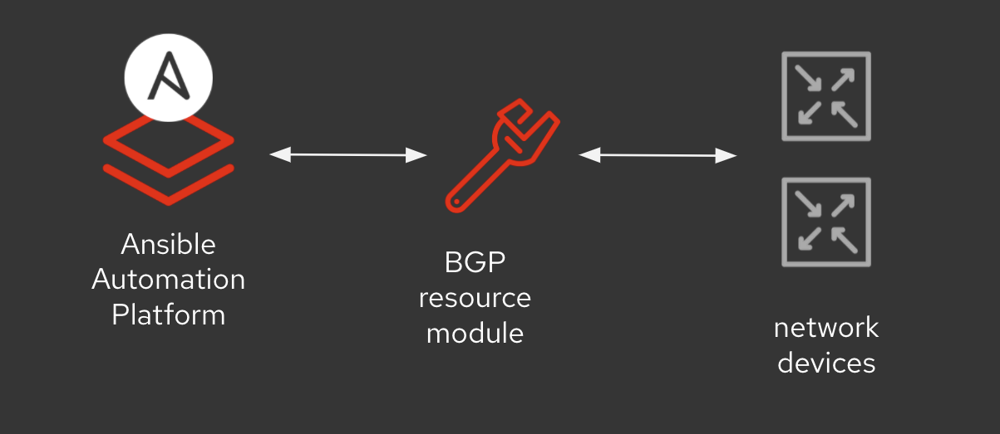
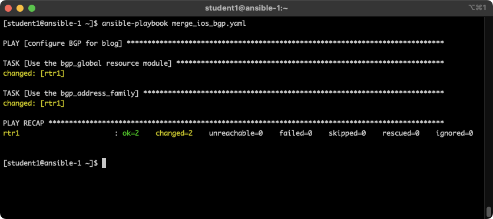
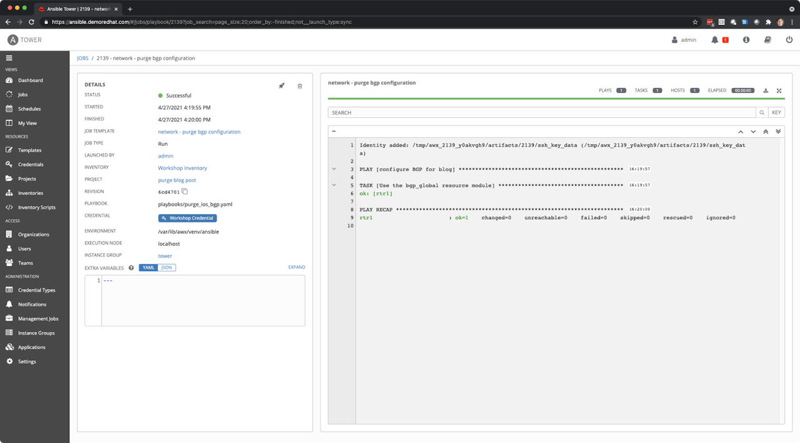

Ansible Network Resource Purge parameter
Ansible Network Resource Purge parameter
Red Hat Ansible Network Automation continues to be a popular domain for Red Hat Ansible Automation Platform. We have continually developed additional resource modules to make automating network appliances easier, and more approachable, for novices and experts alike. These resource modules provide a consistent experience across multiple network vendors. There are seven main state parameters for resource modules: merged, replaced, overridden, deleted, gathered, rendered and parsed. The Ansible network team is adding one more parameter, purged, to this tool chest for resource modules. This blog will cover the purged parameter and show use-cases through a practical example.

For this example, we will be using two BGP resource modules to configure
a Cisco network device. We will be using the bgp_global module
and the bgp_address_family module. The BGP configuration is split
between these two separate modules to simplify configuration and data
models associated with them.
Let's start with a data model:
bgp_global: as_number: '65000' bgp: log_neighbor_changes: true router_id: address: 192.168.1.1 neighbor: - activate: true address: 10.200.200.2 remote_as: 65001 bgp_address_family: address_family: - afi: ipv4 neighbor: - activate: true address: 10.200.200.2 network: - address: 10.25.25.0 mask: 255.255.255.0 - address: 10.25.26.0 mask: 255.255.255.0 - address: 10.100.100.0 mask: 255.255.255.0 - address: 10.200.200.0 mask: 255.255.255.0 - address: 172.16.0.0 - address: 192.168.1.1 mask: 255.255.255.255 as_number: '65000’
NOTE: If you are new to resource modules, you can quickly create these data models by using the state: gathered parameter to read in a brown-field (already configured) network devices and save that configuration to structured data (e.g. YAML)
We can push this data model configuration to our Cisco network device very easily with a simple Ansible Playbook:
--- - name: configure BGP for blog hosts: cisco gather_facts: false tasks: - name: Use the bgp_global resource module cisco.ios.ios_bgp_global: config: "{{ bgp_global }}" - name: Use the bgp_address_family cisco.ios.ios_bgp_address_family: config: "{{ bgp_address_family }}
You can copy this playbook directly from Github
To execute the playbook:
ansible-playbook merge_ios_bgp.yaml
The output will look similar to the following:

Finally let's look at the generated configuration on our Cisco IOS network device:
rtr1#sh run | s router bgp router bgp 65000 bgp router-id 192.168.1.1 bgp log-neighbor-changes neighbor 10.200.200.2 remote-as 65001 ! address-family ipv4 network 10.25.25.0 mask 255.255.255.0 network 10.25.26.0 mask 255.255.255.0 network 10.100.100.0 mask 255.255.255.0 network 10.200.200.0 mask 255.255.255.0 network 172.16.0.0 network 192.168.1.1 mask 255.255.255.255 neighbor 10.200.200.2 activate exit-address-family
So finally here is the easy part, using our new state: purged parameter:
you can delete the entire bgp configuration on a device using one task.
This might be often relevant on lab networks or when you want to start
with a clean-state configuration.
- name: Use the bgp_global resource module cisco.ios.ios_bgp_global: state: purged
Difference between purged and deleted
The state: deleted parameter is very similar, however it has two primary
purposes different than purged. Deleted has the ability to remove the
specified configuration with the config parameter. If no configuration
is specified it will delete that entire resource (e.g. all address
family configuration if using the bgp_address_family module). However,
there are multiple resource modules that make up BGP configuration. This
means you would need multiple modules running state: deleted to remove
all the BGP configuration. The state: purged parameter allows you to
use bgp_global resource module to remove all BGP configuration
simplifying your Ansible Playbooks.
Now we can execute the playbook and manually check the configuration to see what it did:

In the above screenshot (from the Ansible Automation Platform Web UI) you can see that the playbook ran successfully and the BGP configuration is now removed.
Checking the running configuration on the Cisco router will reflect the change:
rtr1#sh run | s router bgp rtr1#
Why would I use one over the other?
Many people are automating brownfield networks, or even networks where a mix of manual changes and automated changes are taking place. You might want to remove all BGP configuration from multiple devices where you have no SoT (Source of Truth) setup. This allows a playbook writer to use one task to destroy just BGP configuration versus a multiple-module method. This is just another tool in your resource module toolbelt!
Where do I go next?
All the examples in this blog post are on Github here.